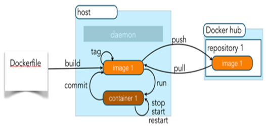

4.9: Docker
钱江源通过容器技术（Docker）将平台应用微服务化，可以跨平台部署。
1. Docker的优点
Docker平台可以将应用程序和应用程序的整个环境打包在一起（容器化），使得应用程序可在开发环境和生产环境快速迁移，而不必关心生产坏境使用什么样的操作系统等。这有利于AI科学家快速将自己的AI应用（包括运行环境）部署到集群无障碍运行。
| 特性 | 虚拟机 | 容器 |
|---|---|---|
| 启动 | 分钟级 | 秒级 |
| 资源消耗 | 很大，单机一般几十个VM，硬盘使用一般为GB | 很小，单机支持上千个容器，硬盘使用一般为MB |
| 性能 | 通过对硬件层的模拟，增加了系统调用链路的环节，有性能损耗 | 共享Kernel，接近原生，几乎没有性能损耗 |
| 操作系统覆盖 | 支持Linux、Windows、Mac等 | 仅仅Kernel所支持的OS |

通过编写Dockerfile构建Docker镜像，再将相关镜像推送到Docker官方仓库或者私有仓库，使用时只要从云端仓库中拉取目标镜像到本地即可一键部署使用。这非常简单，最棒的是应用每次都运行在完全一致的环境中，无需担心主机是否运行了相关环境，因为它是在镜像内部安装的。
以钱江源的WebUI服务作为例，以下Dockerfile描述了WebUI服务所需要生成的环境依赖，如Flask, Dotnet等，同时也指明了服务的工作路径workdir /usr/webPortal,在开发机上运行带build参数的Docker镜像构建语句，将生成包含有WebUI应用及其依赖的目标镜像,将镜像推送（push）到私有云端仓库保存后，在其他主机节点上可以通过拉取（pull）云端镜像到本地，执行docker run语句根据镜像构建Docker 容器运行应用，而不需要再配置环境。
FROM ubuntu:16.04
MAINTAINER Hongzhi Li <Hongzhi.Li@microsoft.com>
RUN apt-key adv --keyserver hkp://keyserver.ubuntu.com:80 --recv-keys 3FA7E0328081BFF6A14DA29AA6A19B38D3D831EF
RUN echo "deb http://download.mono-project.com/repo/debian wheezy main" | tee /etc/apt/sources.list.d/mono-xamarin.list
RUN echo "deb http://download.mono-project.com/repo/debian wheezy-apache24-compat main" | tee -a /etc/apt/sources.list.d/mono-xamarin.list
RUN apt-get update
RUN apt-get install -y apt-transport-https
RUN sh -c 'echo "deb [arch=amd64] https://apt-mo.trafficmanager.net/repos/dotnet-release/ xenial main" > /etc/apt/sources.list.d/dotnetdev.list'
RUN apt-key adv --keyserver hkp://keyserver.ubuntu.com:80 --recv-keys 417A0893
RUN apt-get install -y apt-transport-https
RUN apt-get update
RUN apt-get install -y dotnet-dev-1.0.0-preview2.1-003177
RUN apt-get install -y dotnet-dev-1.0.0-preview2-003156
RUN apt-get update && apt-get install -y --no-install-recommends \
build-essential \
cmake \
git \
wget \
vim \
python-dev \
python-numpy \
python-pip \
python-yaml \
locales
RUN apt-get install -y bison curl nfs-common
RUN pip install --upgrade pip;
RUN pip install setuptools;
RUN locale-gen en_US.UTF-8
RUN update-locale LANG=en_US.UTF-8
RUN pip install flask
RUN pip install flask.restful
#this ssh key is used to download DLWorkspace from github. It has read-only access to github repo.
RUN apt-get install -y --no-install-recommends ssh
WORKDIR /usr/WebPortal
ADD WebPortal /usr/WebPortal
COPY run.sh .
RUN chmod +x run.sh
CMD ./run.sh
2. 无状态化的微服务架构设计
钱江源平台由一系列的微服务组成，每一个微服务可以独立创建、部署、弃用，微服务化使模块之间的依赖解耦，部分模块的升级更新或扩缩容将不影响其他模块的正常运行，保证了钱江源系统的高可用。将无状态的业务逻辑（如用户请求的转发等）与有状态的数据（如计算任务的状态信息等）分离，将有状态的数据集中到同一个地方保存管理，如SQL Server或者Kubernete etcd，方便了集群的扩展及多机房部署。